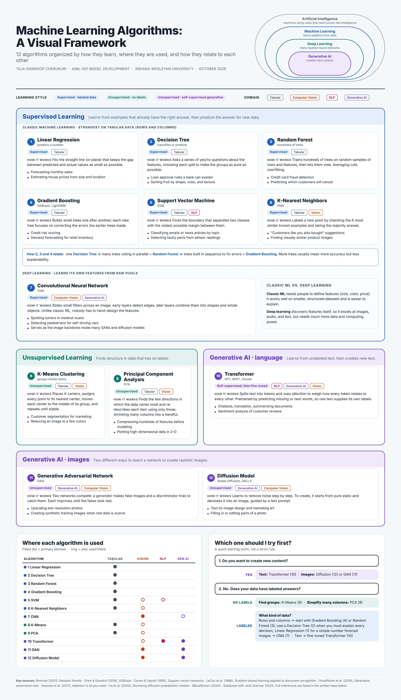
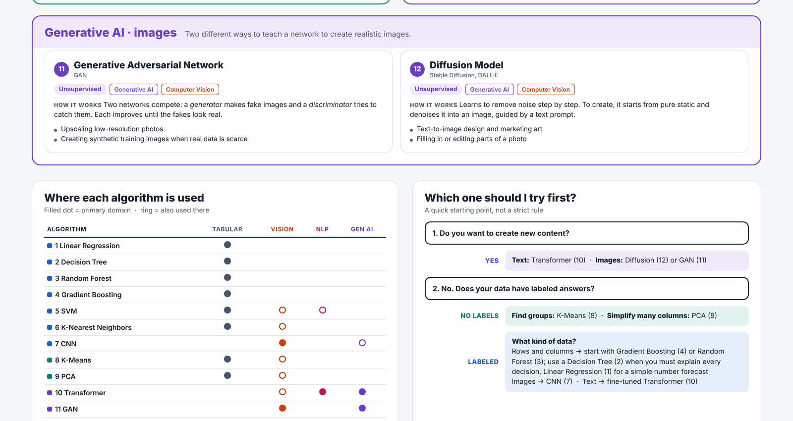

Artifact Information
This artifact is a visual reference that classifies 12 machine learning algorithms by learning style (supervised, unsupervised, and generative) and by application domain (tabular data, computer vision, natural language processing, and generative AI).
Introduction
Choosing the right algorithm is one of the first and most important decisions in any machine learning project. With so many methods available, it is easy to lose track of what each one does and where it fits.
This framework brings the most common algorithms into one picture, showing how they relate to each other and which problems each one is best suited for, with special attention to the generative AI models that are reshaping the field.
Description
The infographic organizes 12 algorithms into three color-coded groups. Supervised learning: Linear Regression, Decision Tree, Random Forest, Gradient Boosting, Support Vector Machine, K-Nearest Neighbors, and Convolutional Neural Network. Unsupervised learning: K-Means Clustering and Principal Component Analysis. Generative AI: Transformer (GPT, BERT), Generative Adversarial Network, and Diffusion Model.
Every algorithm card lists its learning type, its application domains, a plain-English explanation of how it works, and real-world use cases. The framework also shows how the algorithms relate: a nested diagram of AI, machine learning, deep learning, and generative AI; how a Decision Tree grows into a Random Forest and then Gradient Boosting; a classic machine learning versus deep learning comparison; a domain matrix; and a "Which one should I try first?" decision guide.


Objective
- Identify and categorize key machine learning algorithms by learning style
- Show each algorithm's primary application domains and real-world use cases
- Make the relationships and differences between algorithms easy to see at a glance
- Build a reference I can use throughout my AI studies and professional work
Process
- Reviewed course resources on how AI, machine learning, deep learning, and generative AI relate to each other
- Selected 12 algorithms so that tabular data, computer vision, NLP, and generative AI were each covered by at least two methods
- Verified each algorithm's learning type and main uses against the original research papers and course videos
- Wrote a one- or two-sentence plain-English explanation and recognizable real-world examples for every algorithm
- Designed the layout around one question, "Which algorithm fits my problem?", using consistent colors for learning styles and domains
- Added a domain matrix and decision guide, then checked every label for overlap and clarity before publishing
Tools and Technologies Used
Value Proposition
This artifact shows that I can take a complex, fast-moving technical field and turn it into a clear, accurate tool that helps others make decisions. It helps a project team narrow down which algorithms are worth testing and explains each approach in plain language for non-technical stakeholders.
Unique Value: Goes beyond a list of methods by connecting them: how algorithms grow from one another, where classic machine learning ends and deep learning begins, and how generative AI fits into the wider field, with a built-in guide for choosing a starting point.
Relevance: Useful for data analysis, data science, and AI roles where choosing the right model and explaining that choice to decision-makers are everyday tasks.
References
Breiman, L. (2001). Random forests. Machine Learning, 45(1), 5–32; Chen, T., & Guestrin, C. (2016). XGBoost: A scalable tree boosting system. Proceedings of the 22nd ACM SIGKDD International Conference on Knowledge Discovery and Data Mining, 785–794; Cortes, C., & Vapnik, V. (1995). Support-vector networks. Machine Learning, 20(3), 273–297; Goodfellow, I., et al. (2014). Generative adversarial nets. Advances in Neural Information Processing Systems, 27; Ho, J., Jain, A., & Abbeel, P. (2020). Denoising diffusion probabilistic models. Advances in Neural Information Processing Systems, 33; LeCun, Y., Bottou, L., Bengio, Y., & Haffner, P. (1998). Gradient-based learning applied to document recognition. Proceedings of the IEEE, 86(11), 2278–2324; StatQuest with Josh Starmer. (2021). Decision and classification trees, clearly explained!!! [Video]. YouTube; 3Blue1Brown. (2024). Transformers, the tech behind LLMs [Video]. YouTube; Vaswani, A., et al. (2017). Attention is all you need. Advances in Neural Information Processing Systems, 30.